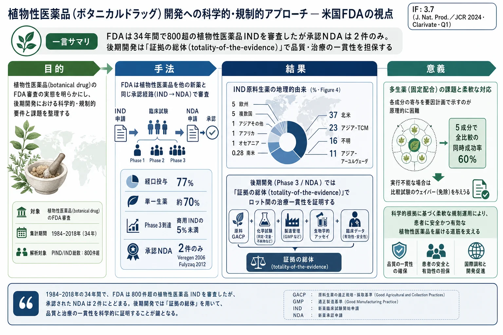
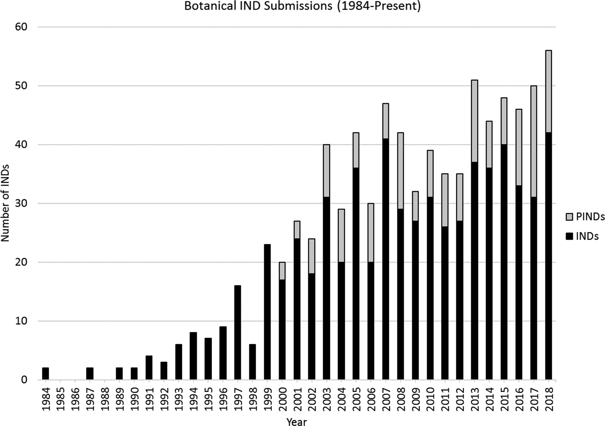
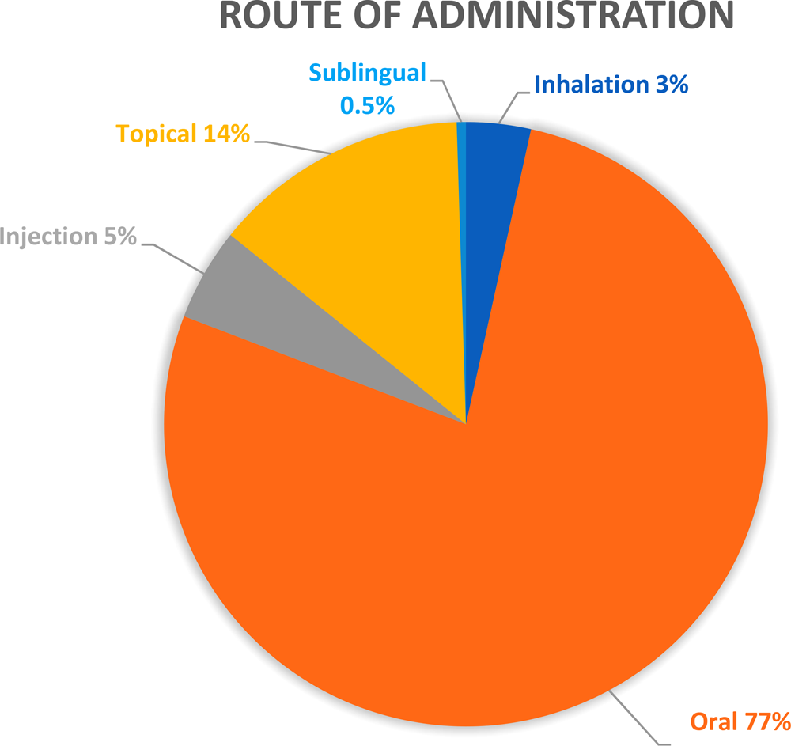
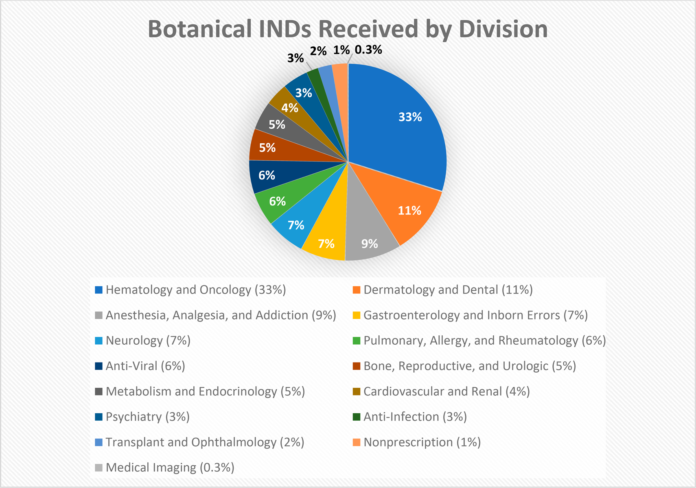
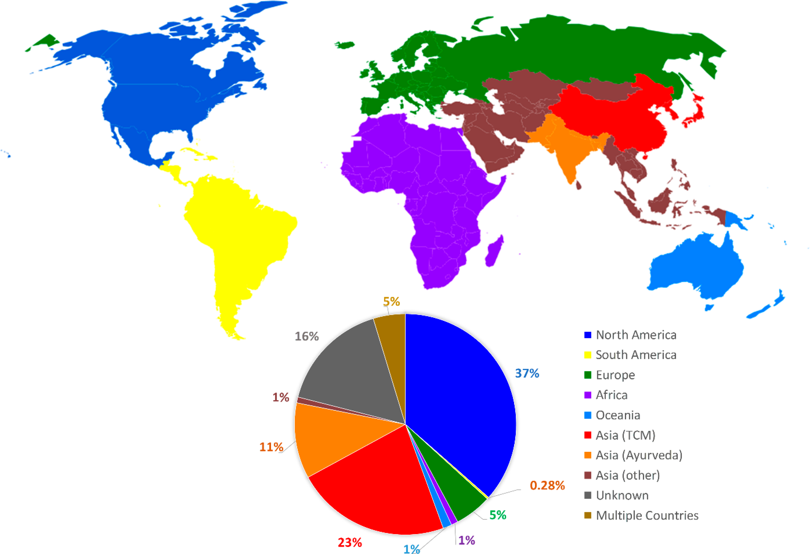

植物性医薬品（ボタニカルドラッグ）開発への科学的・規制的アプローチ — 米国FDAの視点

<!-- 方針: ほぼ全訳＋必要に応じた補足。原文構成に沿って訳出。「> 補足:」は訳者注。 -->
書誌情報
- 原題: Scientific and Regulatory Approach to Botanical Drug Development: A U.S. FDA Perspective
- 著者: Charles Wu（責任著者）, Su-Lin Lee, Cassandra Taylor, Jing Li, Yen-Ming Chan, Rajiv Agarwal, Robert Temple, Douglas Throckmorton, Katherine Tyner（いずれも米国 FDA / CDER・医薬品品質部門(OPQ)ほか、うち複数が植物性医薬品審査チーム(Botanical Review Team, BRT)所属。米国メリーランド州シルバースプリング）
- 掲載: Journal of Natural Products 83 (2020) 552–562（総説, Review）. https://doi.org/10.1021/acs.jnatprod.9b00949
- インパクトファクター: 3.7（Journal of Natural Products, JCR 2024 / Clarivate, Q1。天然物化学分野の代表誌。参考: 2023年は5.1と報告）
- 受理経過: 受領 2019-10-01 / 公開 2020-01-24。本論文は米国著作権の対象外（米国政府職員による著作）。
- 免責: 本論文は著者の見解を示すものであり、FDA の見解・方針を代表するものではない（謝辞欄の記載による）。
補足: 「植物性医薬品（botanical drug）」とは、米国 FDA が定義する植物由来の複雑混合物を有効成分とする医薬品を指す。単一の精製化合物ではなく、複数成分の混合物のまま「薬」として承認される点が、パクリタキセルのような単離化合物とは根本的に異なる。漢方・生薬（TCM, アーユルヴェーダ, Kampo 等）を医薬品として米国で開発する際の入口がこの制度であり、本稿は FDA 審査当局自身が制度の運用実態と考え方を解説した一次資料として価値が高い。IND = 治験薬申請（治験開始の許可申請）、NDA = 新薬承認申請、PIND = pre-IND ミーティング要請（IND 提出前の相談）。
要旨（Abstract）
米国 FDA は、2018 年に至るまでの期間に 800 件を超える植物性医薬品の治験薬申請（IND）および pre-IND ミーティング要請（PIND） を受理してきた。現在のデータでは、提出された IND の適応症は FDA のほぼ全審査部門にわたっている。植物性混合物を医薬品として研究する世界的関心の高まりにもかかわらず、米国で承認された植物性医薬品の新薬承認申請（NDA）は 2 件のみである。すなわち、2006 年の Veregen と 2012 年の Fulyzaq（別名 Mytesi） である。植物性医薬品の化学的・生物学的な複雑さを踏まえると、その薬理の特徴づけ、治療有効性の実証、品質の一貫性の担保は、依然として科学的・規制的な課題であり続けている。FDA は 2016 年 12 月に改訂版「Botanical Drug Development Guidance for Industry（産業界向け植物性医薬品開発ガイダンス）」を公表し、後期試験に関する開発上の考慮事項に対応するとともに、植物性医薬品開発を促進するための推奨事項を提供した。本稿では、植物性 IND の分析を通じて、その原料生薬の多様性（例：由来する地理的地域の違い、単一生薬か複数生薬か）、これまでのヒトでの使用経験のレベルの違い、治療領域を示すとともに、植物性医薬品を審査してきた経験と課題の概観を提供する。
序論（Introduction）
植物性生薬（botanicals）やその他の天然物は、何千年もの間、幅広いヒトの疾患の治療のために伝統的な生薬（ハーブ医薬品）として用いられてきた。医学の歴史は、中国・エジプト・ギリシャ・インド・中東などの古代にまで遡る。世界保健機関（WHO）によれば、世界人口の 80% が今なお一次医療として植物ベースの伝統医薬品に依存しており、植物由来の 122 の医薬品のうち 80% はその本来の民族薬理学的用途に関連している可能性がある。
古代以来、近代医学はすべての治療領域で顕著な進歩を遂げてきたが、新薬開発は依然として伝統医薬品と結びついており、その大半は植物ベースの治療である。多くの植物性生薬（および動物由来薬・鉱物）の薬理学的特性は、多くの初期段階の創薬・開発プログラムの出発点として用いられてきた。伝統医薬品の知識と実践的利用は薬用植物を新薬候補として研究する方向へと展開し、よく知られた医薬品となった天然分子や植物性分子の誘導体（例：ジゴキシン、パクリタキセル、アルテミシニン系薬剤）の単離につながった。
植物性生薬は本質的に不均一な混合物であり、明確な活性成分を欠くことが多いため、複数の成分が全体の治療効果に寄与している場合がある。植物性混合物に内在する化学的複雑さゆえに、植物性医薬品の開発者は IND 治験を開始する際、一貫した製品品質の保証など、様々な困難な問題を経験することが多い。複数の植物部位および/または様々な植物種に由来する植物性製品は、この課題をさらに大きくする。しかし、多くの植物性製品が持つ数千年に及ぶ使用の歴史は、初期段階のヒト試験の安全性を裏づけるために通常求められる新規の動物毒性試験の必要性を、これまでのヒトでの使用経験を活用することで低減・延期できる機会を提供する。こうした状況に対応し、植物性医薬品開発を奨励・促進するため、米国 FDA は 2016 年 12 月に「Botanical Drug Development Guidance for Industry」を改訂・最終化した。このガイダンスは、植物性 IND と NDA の提出に関心を持つスポンサーに対し、申請プロセスと、化学的に複雑な植物性製品がどのように FDA の厳格な医薬品審査プロセスを満たしうるかについて助言する。本稿では、当局の最新の規制上の期待を示すとともに、植物性医薬品の申請審査における経験を共有し、植物性医薬品開発の全体像を提供する。
植物性医薬品申請の全体像 — 現在までの規制状況
米国内では、企業や研究者は IND を提出することで臨床試験の開始許可を得る。FDA は、IND 提出前に当局と早期にやり取りすることを企業に推奨している。FDA との早期の相互作用は、クリニカルホールド（試験の進行を FDA が許可しないこと）の問題が生じるのを防ぐのに役立つからである。そうしたコミュニケーションの一形態が pre-IND ミーティング（PIND） であり、完全な IND を準備するのに役立つ情報をスポンサーに提供できる。
市販される新薬の規制・管理は NDA プロセスを通じて行われる。NDA 申請は、医薬品スポンサーが米国内での販売・マーケティングについて FDA に承認を正式に求めるための手段である。通常は IND のもとで実施される動物試験とヒト臨床試験で収集されたデータが NDA の一部となる。植物性医薬品も、低分子医薬品と同じ規制経路を通る。
2003 年、FDA は 植物性医薬品審査チーム（Botanical Review Team, BRT） を設立した。BRT は、すべての原 IND・NDA 提出について、原料生薬・これまでのヒトでの使用経験・植物化学的成分プロファイルの分析を含む、生薬学（pharmacognosy）的な審査を提供する。FDA BRT は、植物性の pre-IND・IND・NDA 申請の院内データベースを保有しており、これは 1984 年（植物性 IND が受理され始めた年）から現在までを対象とする。以下に示すデータは 1984 年から 2018 年までに受理された申請に適用され、投与経路・治療領域・申請の状態と性質（例：商業目的か研究目的か）・原料生薬の地理的由来に基づいて分析されている。
年次 PIND/IND 提出数（1984–2018）
FDA は 1984 年に、限られた数の適応症について植物性 IND を受理・審査し始めた。より多く複雑な植物性医薬品を受理するにつれ、FDA は植物由来製品が通常の化学的・生物学的医薬品と重要な点で異なることを認識した。そこで FDA は 2004 年に最初の植物性医薬品ガイダンスを公表し（2016 年に改訂）、植物性医薬品の開発経路と審査プロセスに関する情報を提供した。それ以降、植物性医薬品開発への関心は高まり、スポンサーは完全な IND を準備し、植物（例：これまでのヒトでの使用、原料生薬の由来と同一性）・化学/製造/品質管理（CMC）・非臨床/臨床安全性データの情報不足によるクリニカルホールドの問題を避けるため、pre-IND ミーティング要請を提出し始めた。
過去 34 年間で 800 件を超える植物性 PIND/IND が FDA によって受理・審査され、IND については経時的に増加傾向を示している（Figure 1）。年間の IND 提出数は 2 件（1984 年）から 56 件（2018 年）の範囲であった。2000 年から 2018 年のデータでは、年間 PIND/IND 提出数に 3 つの顕著なスパイク（2007 年・2013 年・2018 年）が見られた。最初のスパイク（47 件）は、最初の植物性 NDA（Veregen）承認の 1 年後である 2007 年に起きた。もう 1 つ（51 件）は、2 番目の植物性 NDA（Fulyzaq／別名 Mytesi）承認の 1 年後である 2013 年に起きた。

最後のスパイクは 2018 年の 56 件で、これは当局が 2016 年 12 月に改訂・最終版の「Botanical Drug Development Guidance for Industry」を公表し、BRT が各種の会議・セミナー・ワークショップを通じて外部ステークホルダーと積極的にコミュニケーションを取り、当局の現在の考え方の認知を広めて植物性医薬品開発を促進し始めてから、1 年余り後のことである。過去 15 年間で、学術研究機関と製薬企業から 年間約 40 件の PIND/IND が提出された。これは、1984～1998 年の年平均 10 件未満、1999～2002 年の年平均 22 件と比べて全体として増加傾向を示す。これらのデータは、米国市場向けの植物性医薬品開発への関心の高まりを示している。
2000 年以降、植物性 IND スポンサーの およそ 4 分の 1 が、植物性医薬品開発の早期に当局から助言を得て、将来の IND 提出でのクリニカルホールドを避けるため、PIND ミーティングを要請した。これらの PIND 要請の大半は、商業目的 IND のスポンサーからのものであった。
研究目的別に分類した植物性 IND
2018 年までに FDA に提出された IND のうち、およそ 3 分の 2 は研究 IND（research IND）で、学術・研究機関の個々の研究者（主に医師）によって実施された。これらは主に小規模な概念実証（proof-of-concept）試験で、しばしば 1994 年の栄養補助食品健康教育法（DSHEA）のもとで一般的な健康維持や栄養欠乏症に関する表示で栄養補助食品（dietary supplement）として販売されている製品を用いていた。対照的に、疾患の診断・治癒・軽減・治療を目的とする植物性製品は、FD&C 法 201(g)(1)(B) 条のもとで医薬品の定義を満たし、医薬品として規制される。こうした研究 IND の適応症は、主に腫瘍・皮膚・心血管疾患・ウイルス性疾患といったアンメットメディカルニーズの領域に集中していた。提出プロファイルは、概して以前に実施・公表された調査と類似していた。提出は、製造業者から供給された製品や市販の栄養補助食品を用いた個々の研究者によるものであった。
対照的に、残りの 3 分の 1 の商業目的 IND（commercial IND）は、明確な医薬品開発意図を持つ製薬製造業者がスポンサーとなっていた。これらの提出は、原料生薬やその他の CMC 情報、および製品のこれまでのヒトでの使用経験について、より詳細な情報を提供することが多かった。また、これらの提出は通常、（既に市販されている製品ではなく）新たに製造された製品を用いていた。このような詳細情報の提供は、試験を初期段階の臨床試験へと進めることを可能にする安全性・品質評価を FDA が促進するのに役立つ。これらの商業目的植物性 IND のうち、5% 未満しか Phase 3 試験に進んでおらず（データ非掲載）、これは最終的な NDA 提出の強力な予測因子である。この成功率は、全商業目的 IND の全体成功率 約 14% よりも低い。
成功率が低い理由として考えられるのは、活性医薬品成分（API）の特徴づけが困難であること（それらはしばしば複数の植物性成分の混合物である）であり、大規模な Phase 3 試験に入る前に品質の保証を提供する必要がある。植物性医薬品の研究者・開発者はまた、公開会議において、植物性栄養補助食品の既存の販売、したがって意味のある独占権（exclusivity）の欠如が、容易に入手できる植物性製品について厳格な医薬品開発を行うことへの重大な財政的ディスインセンティブになっていると指摘してきた。in vitro・in vivo の薬理学的データの裏づけなしに、伝統医薬品における逸話的経験を検証可能な仮説へ翻訳することもまた、後期臨床開発にとって問題を生じうる。
投与経路別に分類した植物性 IND
医薬品全般と同様に、植物性 IND の大多数は 経口投与（77%）であった（Figure 2）。IND スポンサーは、錠剤・丸剤・カプセル・懸濁剤・チンキ剤を含む多様な経口剤形を選択した。2 番目に多い投与経路は 外用（14%）、次いで 注射（筋肉内・静脈内を合わせて 5%）であった。残りの 4% の INDは、その他の投与経路（吸入・腟内・舌下・直腸）であった。非経口経路での曝露は生薬・ハーブ医薬品では比較的少ない。非経口経路は、品質管理・無菌性の課題・この投与経路に伴う安全性の懸念といった開発上の障害のために避けられていると推定される。

補足: 本文は「その他 4%（吸入・腟内・舌下・直腸）」とまとめているが、Figure 2 の円グラフは内訳として「吸入 3%・舌下 0.5%」を明示している（残りの腟内・直腸は図では細分表示なし）。数値は原文どおり転記。
治療領域別に分類した植物性 IND
申請が FDA に提出されると、その治療領域に基づいて、医薬品評価研究センター（CDER）内の特定の臨床審査部門に割り当てられる。新薬審査部門を統括する新薬オフィス（OND）のすべての新薬審査部門が、少なくとも 1 件の植物性医薬品 IND 提出を受理している（Figure 3）。植物性提出の大部分は 3 つの審査部門/オフィスに集中している。
- 血液・腫瘍製品オフィス（OHOP） は、全植物性 IND 提出の 約 3 分の 1（33%） を各種がん研究向けに受理した。適応症には、がん予防、がん症状の改善、がん治療（すなわち腫瘍反応・進行までの時間、および腫瘍バイオマーカーへの効果）が含まれた。がん研究向けの 33% のうち、27% が固形がん、6% が血液悪性腫瘍向けであった。
- 皮膚・歯科製品部門（DDDP） は、植物性 IND 提出の 11% を受理し、承認された 1 件の NDA（Veregen）を持つ。DDDP の申請は、乾癬・疣贅（いぼ）・創傷・足潰瘍など様々な皮膚障害に対する植物性製品を研究した。
- 麻酔・鎮痛・依存製品部門（DAAAP） は、IND の 9% を受理し、関節・筋肉痛の疼痛緩和と炎症軽減を目的とした外用・経口製品（例：各種の大麻またはカンナビス由来製品）を含んでいた。

Figure 3 は、残りの IND 提出が他の 13 の臨床審査部門（神経・消化器・抗ウイルスなど）にどう分布しているかを示す。
全体として、植物性 IND の治療領域は幅広い適応症をカバーしている。IND のもとで FDA が審査した疾患適応症は、腫瘍製品を例外として、EMA（欧州医薬品庁）が受理したハーブ医薬品申請の公表報告といくつかの類似性を示した。様々ながん患者で研究された植物性 IND の割合は、腫瘍領域における医薬品開発全体の関心と一致しているように見えた。この結果は予想と合致する。特にがん患者の間で、伝統的な臨床ケアを補うために植物性栄養補助食品や「ハーブ医薬品」を用いることへの一般の関心が高まっているからである。一部の植物抽出物ががんやその他の疾患に対して活性を持つことは知られているが、通常の創薬アプローチは単一の化学化合物を単離・特徴づけし、精製分子や合成類縁体を医薬品開発の候補とすること（例：パクリタキセル）であった。植物由来の多くの治療薬ががん治療のために開発されてきた。現在市場にある植物由来の低分子抗がん剤には主に 4 つのクラスがある。すなわち、ビンカアルカロイド（例：ビンブラスチン、ビンクリスチン、ビンデシン）、エピポドフィロトキシン（例：エトポシド、テニポシド）、タキサン（例：パクリタキセル、ドセタキセル）、カンプトテシン誘導体（例：カンプトテシン、イリノテカン）である。より最近では、2014 年に第 5 のクラスとして オマセタキシン メペスクシネート（Synribo） が市場に加わった。ただし植物性医薬品は、単一分子の単離物ではなく複雑な混合物である。これらの複雑な混合物は、植物性製品中の異なる成分による相乗的活性の可能性を持つ。また、植物抽出物中に複数の化合物が存在することで、活性成分の毒性が低減される可能性もある。
原料生薬の地理的分布とハーブ医薬品の由来
FDA が植物種を検討するには、国際命名規約に従い、原植物種のラテン語二名法（Latin binomial name）を用いて原料生薬を正しく同定することが不可欠であり、IND 提出のすべての植物性製品について期待される。原料生薬の地理的位置は、当局が IND のもとで研究される植物性医薬品を審査する際、真正性・品質・安全性を保証するうえで同様に重要である。原料生薬と医薬品のロット間一貫性を確保するため、特に後期段階の植物性医薬品開発においては、良好農業規範・採取規範（GACP）（WHO の GACP ガイドラインや EMA の植物由来原料 GACP ガイドラインを参照）を IND スポンサーが策定し、各地理的地域における原料生薬の生産を導くために栽培者/農場レベルで実装すべきである。
2018 年までに、北米で栽培/採取された原料生薬に由来する植物性製品は IND の 37% を占めた（Figure 4）。これらの植物性製品は通常、米国では栄養補助食品として販売されるか、消費者から「補完代替医療（CAM）」とみなされ、カナダでは「天然健康製品（natural health products）」とみなされる。これらは、アメリカニンジン（Panax quinquefolius）・ブロッコリースプラウト・ブルーベリー・クランベリー・エキナセア・ブラックコホシュ・ノコギリヤシ（saw palmetto）などの植物に由来する。特に関心が高いもう 1 つの主要な植物性生薬は 大麻（cannabis、スケジュール I 物質として用いられる場合はマリファナと通称）で、北米で栽培されている。Cannabis sativa L. はアジア起源だが、医療・娯楽目的で世界中で栽培されている。米国では、国立薬物乱用研究所（NIDA）の NIH 薬物供給プログラムが、ミシシッピ大学との連邦契約を通じて、IND 向けに臨床研究者へ大麻の原料と製品を供給してきた。

IND のもとで研究される植物性製品の 2 番目に大きい割合（約 34%）は、アジアのハーブ医薬品体系、主に伝統中国医学（TCM, 23%） に由来し、アジアニンジン（Panax ginseng の根）・黄耆（Huang Qi）・丹参（Chinese Salvia／Dan Shen）由来の製品を含む。インドの伝統ハーブ医薬品（アーユルヴェーダを含む）は、植物性 IND のさらに 11% を占め、最も一般的に研究されている植物性製品の 1 つである Curcuma longa（ウコン／turmeric）由来製品を含む。少数（1%）の植物性 IND の原料生薬は、韓国・日本で一般的に使われるハーブ医薬品（例：漢方（Kampo）医薬）に由来していた。この原料生薬の地理的分布パターンは、植物性製品が伝統的に使用され、世界（中国・インド・米国・日本など最も人口の多い国々を含む）でハーブ医薬品/栄養補助食品として今なお人気を保っている地域における、科学研究への一般の関心のレベルを反映しているのかもしれない。
補足: 日本の漢方（Kampo）由来の原料が全 IND の 1%（韓国と合算）にとどまる点は、TCM の 23%・アーユルヴェーダの 11% と対比すると、米国での医薬品開発の入口における漢方のプレゼンスがまだ小さいことを示す。裏を返せば、漢方処方を「証拠の総体」で品質・治療一貫性を裏づけて FDA 植物性医薬品として開発する余地が残されている、とも読める（この解釈は訳者補足）。
約 5% の植物性 IND は欧州で使用されるハーブ医薬品に由来し、シリマリン・ラベンダー・大麻を含む。Cannabis sativa L. から開発された植物性製品 Sativex は、多発性硬化症に伴う痙縮の治療薬として、欧州・カナダほか（全 25 か国超）で植物性医薬品として販売されている。アフリカ・南米・太平洋地域（オーストラリアなど）由来の原料に基づく植物性製品も少数ある。興味深いことに、5% の IND は複数の植物性生薬から構成され、異なる地理的地域の原料生薬を含む。これらは通常、中国・インド・欧州・米国由来の複数の生薬から構成される合法的に販売されているサプリメントである。
IND のもとで研究される植物性製品の一部は、混合または不明の地理的由来（16%）に由来し、市販の栄養補助食品を用いた早期段階臨床試験を行う複数の研究 IND を含む。これらの栄養補助食品はしばしば、様々な地域由来の複数のビタミン・ミネラル・植物性生薬を、原料生薬の地理的由来に関する限られた情報とともに含んでいる。
原料生薬に関連する品質上の考慮事項
早期段階の研究では、スポンサーが十分な医薬品 CMC データと、提案する試験の安全性を裏づける有害事象情報を伴うこれまでのヒトでの使用経験（例：販売情報）の情報を提供する限り、市販の植物性製品は通常受け入れられる。しかし、そのような植物性製品が、NDA を裏づける臨床安全性・有効性データを生成するために後期段階試験（例：Phase 3）で研究される場合、品質と治療の一貫性を確保するため、原料生薬の特徴づけと品質管理（例：地理的位置とその他の GACP 基準）を含む、より詳細な CMC 情報が必要となる。
植物性医薬品開発の過程では、GACP パラメータ、原料生薬（BRM）の生育条件、および材料が栽培種か野生種かが、全体の品質と治療の一貫性に及ぼす影響を研究すべきである。野生から採取された原料生薬は、栽培種のものより大きなばらつきを持ちうると予想される。栽培された薬用植物種でも、温室栽培と露地栽培では原料生薬の品質が異なりうる。
植物性 IND の大多数（約 70%）は、栽培された原料生薬に由来する植物性製品を研究することを提案していた。例えば、アメリカニンジンとブロッコリースプラウトは主に北米で、アジアニンジン（Panax ginseng の根）とウコンはアジアで栽培されてきた。約 4% の植物性 IND は、野生採取された原料生薬に由来する製品を研究することを提案していた。約 11% の植物性製品は、混合由来（すなわち栽培品と野生採取品の両方）の複数の原料生薬から製造されていた。最大 15% の植物性 IND 提出は、原料生薬の元々の由来の詳細について限られた製品情報しか提供しておらず、特に輸入原料生薬（例：緑茶抽出物）を用いて米国で栄養補助食品として販売されているものであった。
TCM など伝統的アジアのハーブ医薬品体系で用いられる生薬のかなりの部分は、依然として野生から採取されている。多くの生薬学者は、野生採取された生薬や特定地域で採取された種は栽培品より優れ品質が高いと信じているが、成長の遅い一部の生薬の野生採取は、その種と環境に重大なストレスをもたらしうる。野生採取された植物性生薬について品質管理を実証することは依然として困難である。例えば、GACP（害虫管理・重金属管理を含む）の遵守やロット間一貫性の確保は、野生採取生薬にとって重要な課題である。研究によれば、草食動物の存在は植物に化学的応答を引き起こし、それが様々な生理活性分子を生成しうる。さらに、長期的な野生採取の慣行は、一部の生薬そのものの存続を脅かしうる。特定のハーブ医薬品を植物性医薬品としてさらに開発するには、原生薬の持続可能な採取慣行を一貫した品質基準とともに維持すること、および/または、適切かつ多様な世界各地での原生薬の栽培を検討することが考えられる。例えば、**Fulyzaq（Mytesi）の原料生薬である Croton lechleri の樹液**は、GACP 手順の一部として策定・実装された持続可能な収穫方法を用いて、成熟した野生の樹木から採取される。
栽培においては、自然環境で見られる条件を模倣し、肥料・農薬の使用を制限することが望ましいことが多い。栽培者は、WHO の GACP、EMA の植物由来原料 GACP ガイドライン、または国連食糧農業機関（FAO）の良好農業規範（GAP）基準を含む認証有機ガイドラインを利用しうる。FAO は GAP を「安全で健康的な食品・非食品の農産物をもたらす農場生産・生産後プロセスの、環境的・経済的・社会的持続可能性に対処するもの」と説明している。品質保証のため、収穫情報と由来のトレーサビリティ（GAP 基準の 2 つ）は、米国の栽培者が真正性証明書（Certificate of Authenticity）や生薬仕様書（herb specification sheet）の形で、他の情報とともに買い手に提供する重要な品質・安全性の特徴である。提供される情報は実施される試験に応じて異なる。最低限、これらの文書には通常、属名と種名・由来・収穫日と収穫部位・ロット番号が含まれ、試験日・生薬材料の植物部位と形態・官能検査および微生物学的結果・農薬および重金属分析結果が付随する。同定・定量・定性データが得られる場合もある。
GACP は原植物の特徴づけから始まり、品質を確保し誤用を防ぐために重要である。GACP は、小規模・大規模の栽培者・採取者・加工者がベストプラクティスを実装・文書化するためのガイダンスを提供するだけでなく、製造業者が医薬品に用いる原料生薬が正確に同定され、公衆衛生上のリスクとなりうる汚染物質で不正混和されておらず、表示されているすべての品質基準に完全に適合していることを保証するのにも役立つ。Ephedra（麻黄）や Echinacea（エキナセア） など、多くのハーブ医薬品は、野生で一般的に生育するか広く栽培される複数の種に由来する。各種または品種の GACP は後期開発のために策定すべきである。また、ハーブ医薬品の使用に関連する一般名（common name）は、場合によっては混乱を招きうる。例えば「ginseng（ニンジン）」（ウコギ科 Panax 属）には、北米と東アジアの冷涼な気候で自然に育つ複数の種と品種がある。ハーブ医薬品では、「同じ生薬」を製造するために異なる属や科の複数の種が用いられることがある（例：indigo naturalis／青黛）。
植物種と品種の特徴づけ、および標準的なラテン語二名法の使用は、植物起源の確認に不可欠である。これは特に「ginseng」のような場合に重要である。前述のとおり、一般名「ginseng」は実際には複数の種と品種を表す。これらの手順に従わないと、異なるまたは全く臨床有効性を持たない、異なる安全性プロファイルを持つ植物性医薬品が製造されるリスクや、同一植物の複数種による不正混和の可能性がある。ニンジンの場合、利用可能な薬局方収載法は、ジンセノサイドプロファイル（例：特定のジンセノサイドの相対量や有無）に基づいて異なる種を判別するバリデート済みの分析法を提供している。ゲノム法も種の判別に利用可能だが、DNA ベースの手法はクロマトグラフィー法に対する直交的（orthogonal）な手法としてのみ利用できる。
FDA 改訂版植物性医薬品開発ガイダンス — 課題と成功事例
2016 年、FDA は改訂版「Botanical Drug Development Guidance for Industry」を公表した。早期段階臨床試験に追加的な柔軟性を提供することに加え、このガイダンスは、植物性医薬品も他のすべての新薬と同様に扱われ、NDA 承認を裏づけるためには、適切かつ管理された試験からの臨床データやその他の全般的品質基準に対して、同レベルの信頼性が求められると述べた。植物性医薬品のスポンサーは、既存情報の IND への十分性、十分に管理された確証的 Phase 3 試験の開始、NDA 提出を裏づけるデータについて評価するため、pre-IND・第 2 相終了時（EOP2）・pre-NDA の相談に当局とともに参加することが推奨される。当局とのミーティングやその他のコミュニケーションを通じて、スポンサーは追加試験の必要性・臨床試験デザインの問題・初期または全体の医薬品開発計画について助言を得られる。
FDA が承認するすべての新薬に求められる製品品質の基準と、有効性・安全性の証拠は、米国で新薬として販売しようとする植物性製品にも適用される。品質基準は高度に精製された単一分子医薬品では比較的単純かもしれないが、後期段階医薬品開発に入る植物性製品の品質保証は依然として重大な課題である。課題の一部は、植物性生薬の大半が、主要な活性化合物が未知または完全には特徴づけられていない複雑な混合物であることに起因する。さらに、ハーブ製剤の化学組成は、植物起源・栽培地域と栽培慣行・気候条件・加工プロトコルなどの違いにより大きく変動しうる。当局は、植物性医薬品の品質・安全性・治療一貫性を確保するためスポンサーに一般的なガイダンスを提供し、製品について助言を求めより具体的な推奨を得るため、当局との早期コミュニケーションを強く推奨している。
初期の植物性研究は、複雑混合物の存在や未知/不完全に同定された主要活性成分など、植物性生薬の独自の特徴と開発上の実際的課題を考慮する。実質的な過去のヒトでの使用（prior human use）は、これらの課題を軽減できる場合がある。活性成分・生物学的活性・過去の臨床使用が未知の場合、申請にはその旨を明記すべきである。特定の医薬品について IND に提出される情報量は、過去のヒトでの使用経験と過去の臨床試験の程度、既知/疑われるリスク、開発段階など複数の要因による。例えば、1994 年の DSHEA のもとで販売されている植物性栄養補助食品や、既知の安全性上の問題がなく伝統医療体系で使用される植物性生薬は、新規に発見され何らかの理由で DSHEA のもとや伝統医療体系で販売されていない、あるいは既知の安全性上の問題がある植物性製品よりも、早期段階研究の開始に必要な CMC・毒性データが少なくて済むことが多い。一般に、ヒト使用について広範な販売経験を持つ製品の早期段階植物性医薬品開発（例：Phase 1・2 臨床研究）は、分子レベルでの活性成分の特徴づけなど、詳細な CMC 情報なしに進められることが多い。
後期開発の最も重要な課題のいくつかによりよく対処するため、当局は Phase 3 試験と NDA 提出に関する追加推奨事項を盛り込んで植物性医薬品開発ガイダンス文書を改訂した。当局は、植物性医薬品のスポンサーが臨床開発に段階的アプローチ（stepwise approach）を用いること、特に早期段階の試験結果を後期段階臨床試験のデザインに役立てつつ、原料生薬管理の改善と植物性原薬（drug substance）・製剤（drug product）のさらなる特徴づけの努力を続けることを推奨する。Phase 3 試験は、複数ロット・複数用量の試験となる可能性が高く、成功すれば、当該医薬品が疾患適応症に対して安全かつ有効であることを実証するだけでなく、承認後の市販製造に向けて十分なロット間一貫性を持つことも示すことになる。
植物性医薬品の全体的なロット間一貫性は、「証拠の総体（totality-of-the-evidence）」アプローチによって実証されうる。これには、指紋分析（fingerprint analysis）・化学的同定・原薬中の活性成分または化学成分の定量、そして非臨床試験・臨床有効性が臨床ロットと相互作用しないことを示す生物学的アッセイ（biological assay）が含まれる。必要な場合には、開発の様々な段階で使用された原薬/製剤のロットが十分に類似しており、Phase 3 試験や NDA について過去の非臨床・臨床試験結果に依拠できると結論するのを裏づけるため、ブリッジング試験（bridging studies）が要請されることがある。
植物性医薬品研究の課題と潜在的便益
植物性医薬品の品質管理は独自の課題をもたらす。例えば、植物遺伝と生育/栽培条件（例：土壌・光・温度・湿度・収穫時期）の違いが、潜在的な活性成分および/または毒性成分の濃度に大きな違いをもたらしうる。植物性製品はしばしば不均一な混合物を含み、特に複数生薬のもので活性成分が完全には同定されていないものはそうである。地理的地域・季節・加工の違いにより、原料生薬の化学組成と生物薬理学的活性にはかなりの変動が予想される。したがって、低分子の品質管理（QC）に用いられる従来の CMC アプローチは、時に不十分である。
植物性医薬品には多くの技術的課題が残るが、FDA とスポンサーの双方は、現行の医薬品基準を植物性医薬品に適用するため、主要な規制上・科学上の問題に対処し始めている。当局は植物性医薬品開発を促進する規制方針を策定してきた。一般に、植物性 IND 申請の大多数は、提案された初期の Phase 1・2 臨床研究について、しばしば修正プロトコルで、および/または品質・安全性関連の情報要求（IR）に対応して、伝統医薬品（例：TCM・アーユルヴェーダ）としての、あるいは市販経験（例：販売量と報告された有害事象を伴う栄養補助食品）としての過去のヒトでの使用経験を提供することで、「進行して差し支えない（Safe To Proceed, STP）」とされた。この柔軟な規制アプローチは、原薬をさらに精製したり活性成分を同定したりせずに、また過去のヒトでのデータを動物毒性試験の代替または延期に用いることで、植物性製品の早期段階試験を奨励するインセンティブを産業界に提供し、植物性医薬品開発のタイムラインを短縮する可能性がある。その結果、2018 年に審査された IND のうちクリニカルホールドとなったのは 10.71%、スポンサーが取り下げたのは 7.14% にとどまった（補足情報 Table S1、原文参照）。ホールドや取り下げの理由には、過去のヒトでの使用経験の不足、提案された用量の安全性を評価する製品情報の欠如、植物性製品に関連する重篤な有害作用が含まれる。
補足: 補足情報 Table S1 は本体 PDF に含まれていないため詳細は原文参照。本文中の数値（クリニカルホールド 10.71%・取り下げ 7.14%）のみ転記した。
後期段階（例：Phase 3/NDA）へ進んだ約 5% の植物性医薬品については、当局は通常、Phase 3 臨床研究に関する追加ガイダンスとして、植物性医薬品開発ガイダンスの特にセクション VI「Phase 3 臨床研究のための IND」に従う。植物性医薬品の複雑さと実際の「活性成分」の不確実性を認識し、FDA は NDA における植物性生薬の品質を確保するために異なる規制アプローチを用いる。これにより、将来のすべての市販ロットの治療一貫性が保証されうる。従来の化学的特徴づけは依然として重要な品質保証手段であるが、治療一貫性は、原料品質と工程管理・CMC・臨床的に関連する生物学的アッセイ（bioassay）・臨床データを含む「証拠の総体」アプローチによって裏づける必要がある場合がある。このうち、原料生薬（BRM）の GACP は、製品が Phase 3 試験で試験されている間に策定し、NDA 申請提出前に完全に実装すべきである。Phase 3 試験後に生育地を変更したり新たな生育地を追加したりすると、NDA 提出はより困難になる。FDA は、NDA 提出前にできるだけ多くの生育地を適格化しておくことをスポンサーに推奨している。
FDA による厳格な審査の後、植物性製品が提案された用途に対して安全かつ有効であることが示され、便益がリスクを上回ることが明らかで、提案された添付文書（package insert）が適切であり、製造方法と品質維持のための管理が医薬品の一貫した同一性・力価・品質・純度を保つのに十分であれば、NDA は承認され、当該医薬品は処方薬または OTC 薬として 独占権（exclusivity） とともに一般に販売される。独占権は、FDA によって単独または組み合わせで以前に承認されたことのない化学物質を含む医薬品に付与される。これは医薬品開発者を奨励するはずである。栄養補助食品としての販売とは異なり、このプロセスは、植物性生薬が実際に有益な効果を持つという証拠を生み出し、その価値を処方者・患者・支払者が評価できるようにする。
2 つの植物性 NDA 承認からの経験
開発上の課題にもかかわらず、FDA は 2 件の植物性 NDA を承認できた。最初の植物性処方薬 Veregen（Sinecatechins、シネカテキン）軟膏は 2006 年に承認された。Veregen は植物性原薬として **緑茶（Camellia sinensis）葉からの部分精製混合物**を含み、ヒトパピローマウイルス（HPV）に起因する外性器・肛門周囲疣贅（EGW）の治療について承認された。この承認は、天然の複雑混合物から得られる新規治療薬が、現行の FDA の品質管理・臨床試験基準を満たすように開発できることを示した。
2012 年に承認された Fulyzaq（別名 Mytesi） は 2 番目の植物性 NDA であった。Fulyzaq は植物性原薬として **クロトンの木（Croton lechleri）の赤い樹皮の樹液由来のクロフェレマー（crofelemer）** を含み、HIV/AIDS に起因する下痢の治療について承認された。この植物性医薬品の安全性と有効性は、3 つの治療用量を用いた管理臨床試験を通じて確立された。加えて、Fulyzaq の製造業者は、ロット間一貫性を達成するため、原料の厳格な品質管理と良好農業・採取規範、複雑混合物の分析試験、および臨床的に関連する生物学的アッセイを確保しなければならなかった。
Veregen と Fulyzaq の承認は、FDA の科学に基づく「証拠の総体」規制アプローチが、製品品質の一貫性、ひいては植物性医薬品の治療効果を確保できることを示す成功パラダイムを実証した。本質的に、原料管理・臨床的に関連する生物学的アッセイ・および/または臨床データを従来の CMC に加えて含む証拠は、利用可能な分析技術によって植物性混合物全体やその活性成分を特徴づける能力の限界を克服できる。これら 2 つの承認は、FDA の厳格な基準を維持しつつ植物性生薬（伝統医薬品を含む）を開発するための実践的な枠組みを産業界に提供する。
植物性医薬品開発における今後の考慮事項と機会
信頼できる一貫性のための「証拠の総体」アプローチ
植物性医薬品の不均一な性質を踏まえると、植物性医薬品の同一性を分子レベルで完全に決定し、その一貫性を確保することは技術的に困難でありうる。改訂ドラフトガイダンスは、市販ロットが市販前の臨床開発で用いられたロットと治療的に一貫することを実証するため、「証拠の総体」アプローチを推奨する。そのような品質管理は、原料生薬管理（例：良好農業・採取規範）・化学試験による品質管理・製造管理の組み合わせから成る。適切な化学的・生物学的アッセイは、NDA 提出前に、正確性・精度・特異性・直線性・範囲（accuracy, precision, specificity, linearity, range）の観点でバリデートされる。加えて、必要な場合には、治療一貫性を裏づけるため、生物学的アッセイや複数ロット・複数用量の臨床データなどの追加証拠が提供されうる。
生物学的アッセイ（Biological Assays）：化学分析の限界を克服するため、特に粗植物性混合物や複数抽出物の組み合わせから成る医薬品で化学試験だけでは品質・治療一貫性の確保に不十分な場合、生物学的アッセイを植物性製品の品質管理に組み込みうる。理想的には、品質管理のためのバイオアッセイは、植物性医薬品の既知または意図された作用機序を反映し、および/または提案された適応症の薬力学的またはサロゲートバイオマーカーに関連する。原料生薬管理やその他の CMC 手段は植物性医薬品の同一性の確立と品質確保に役立つが、原料や原薬の変動が製品の治療一貫性に影響しないことを確保するため、品質パラメータと薬理学的活性または臨床効果との相関についての情報を確立することが推奨されることが多い。生物学的アッセイの結果は本質的にほとんどの化学アッセイより変動が大きくなりうることを考慮し、ロットの力価と活性は、適切な標準物質または参照物質に対して相対的に測定され、結果は参照物質に対して校正された活性単位（units of activity）で表現されることが多い。
臨床データ（Clinical Data）：更新されたガイダンスは、植物性医薬品への臨床反応が異なるロットの変動によって影響されないことを示すため、主要有効性解析を超える臨床データを要請し、当局はこの点についてスポンサーに 2 つの選択肢を推奨する。1 つ目のアプローチは、複数ロット解析（multiple-batch analyses）を実施し、臨床エンドポイントへのロット効果を調べることである。これにより、試験で異なるロットを受けた被験者の臨床アウトカムにおける潜在的な不均一性を定量できる。原理的には、これは他のタイプのサブグループ解析と類似している。2 つ目のアプローチは、臨床反応が用量に感受性でない（dose に鈍感である）ことを示しつつ、研究された用量がプラセボまたは対照より有効である、または実薬治療に対して非劣性であることも実証することである。これらのアプローチは、承認された 2 つの植物性 NDA の主要臨床試験で実証されており、そこでは様々な治療用量での治療反応が同一であるがプラセボ対照とは有意に異なることが示された。これは、ロットが規格の範囲内に管理されている限り、化学成分に内在する不均一性が最終的な臨床アウトカムに影響を及ぼしえないことを示した。
配合剤規制の適用可能性
1984 年から 2018 年に IND で審査された植物性医薬品の大半（約 70%）は 単一の原料生薬を含み、残りの 30% は 2 つ以上の原料生薬（すなわち 1 植物種の複数部位、または複数種）を含んでいた。植物性医薬品は、複数の植物性原薬（BDS）および/または複数の BRM を一緒に抽出した植物性調製物の配合でありうる。ほとんどの場合、BDS は別々に調製される（例：BRM から抽出・部分精製し、固定比率で混合して最終植物性製剤を作る）。ただし、場合によっては BRM を固定比率で混合してから特定の溶媒で抽出することもある。実際には、複数生薬調製物（例：神麹／Shen qu、別名 Medicated Leaven）・動物部位（例：ミミズ／地竜）・鉱物、特に伝統ハーブ医薬品（TCM・アーユルヴェーダ）で用いられるものが、植物性配合剤の一部となりうる。
現在、複数の原料生薬に由来する植物性医薬品は 固定配合剤（fixed-combination drugs） とみなされる。しかし FDA は、複数の原料生薬を含む製品において各原料生薬の有効性・安全性への寄与を実証することが常に実行可能とは限らないことを認識している。要因計画試験（factorial study）で試験される生薬の数が増えるほど、ベータエラー（誤った陰性判定）も増大する。提案された改訂版配合規則（21 CFR 300.53）は、5 成分製品（ABCDE）に少なくとも 4 つの比較、すなわち 5 群試験（プラセボ群があれば 6 群）— ABCDE 対 ABCD、ABCE、ABDE、BCDE — が必要になると記述している。各比較が 90% で検出力設計され、各比較が 90% の成功率（比較について p < 0.05）を持つとしても、すべてが成功する確率は 60% しかない。成分が増えるほど事態は悪化する。歴史的に用いられてきた一部の植物性配合では、要因計画試験は事実上不可能になる。提案された配合規則のもとでは、すべての成分の組み合わせを研究することが実行不可能な場合、当局はウェイバー（waiver、免除）を付与しうる。
単一の由来（例：アメリカニンジンの根）に由来する植物性医薬品は、たとえ 2 つ以上の活性物質を持っていても、活性成分を意図的に組み合わせていない場合は、提案された固定配合規制のもとで一般に固定用量配合剤とはみなされない。天然由来医薬品に含まれる成分のサブセットを含む製品、または改訂版 21 CFR 300.60 に従って提案規則のもとで既にウェイバーを受けた製品にも、ウェイバーが付与されうる。複数の原料生薬から構成される植物性医薬品候補については、ウェイバーの適用可能性を適切な OND 審査部門と相談することがスポンサーに推奨される。
複数生薬製品が増えるにつれ、「証拠の総体」アプローチはますます重要になる。ロット間の治療一貫性を確保・実証するには、複数生薬に内在する「自然に生じる変動（naturally occurring variations）」が安全で有効かつ一貫した品質管理を持つことを実証するため、バイオアッセイと複数用量/ロットの臨床データが不可欠となる。
後発植物性医薬品への考慮
後発医薬品（generic drugs）は、次の一般的基準を満たさなければならない。すなわち、安全かつ有効・薬学的に同等・生物学的に同等・適切に表示され・CGMP 規制に準拠して製造されること、である。
ANDA（後発医薬品簡略承認申請）の申請者は、後発品と参照医薬品の間の同等性を実証する十分な科学的証拠を提供する責任を負う。参照医薬品と同様に、植物性医薬品については、「証拠の総体」アプローチによる製品の特徴づけが同等性の実証に不可欠となる。当局は、製品開発計画と適切な科学的正当化についての当局との早期の議論が、植物性製品の後発開発を促進すると見込んでいる。
結論（Conclusions）
FDA は、34 年間にわたって 800 件を超える植物性提出を審査することで貴重な経験を蓄積してきた。医薬品開発が Phase 3 や NDA のような後期段階へ進むにつれ、当局は、市販ロットが市販前の臨床開発で用いられたロットと治療的に一貫することを実証するため「証拠の総体」アプローチを推奨する。したがって、品質管理は原料生薬から始まる。地理的位置・土壌・気象・収穫時期といった要因はすべて、重要な成分の濃度に大きな違いをもたらし、最終的に治療・品質の一貫性に影響しうるからである。後期段階の植物性開発には広範な GACP が要請される。植物性医薬品の不均一な性質を踏まえると、同一製品の異なるロット間で治療・品質の一貫性を実証することは、医薬品開発者にとっても、FDA の規制・科学審査スタッフにとっても、依然として課題である。ほとんどの植物性医薬品について、詳細な CMC 情報（例：原薬の包括的特徴づけデータ）は早期段階開発（Phase 1・2 臨床研究）には求められないことがあり、当局は植物性医薬品の品質管理や固定用量配合規則について、いくらかの柔軟性を伴う実践的アプローチを取りうる。
結論として、2 件の承認済み NDA と、800 件を超える植物性提出の審査から蓄積された経験・知識により、2016 年に改訂された植物性医薬品ガイダンスは、後期段階医薬品開発への推奨を伴って、最も重要な課題のいくつかによりよく対処している。我々は、より多くの植物性製品が米国で植物性医薬品として承認を得るために開発され、患者のアンメットメディカルニーズに応えることを期待している。
訳者補足（本稿の位置づけ）
- 本稿は分析法の論文ではなく、FDA 審査当局が自ら書いた「制度と実務の解説」 である。個別の検量線・LOD/LOQ・回収率などの分析条件は登場せず、代わりに 800 超の申請の統計（投与経路・治療領域・原料の地理的由来）と、後期開発で品質・治療一貫性をどう担保するかの規制哲学が中心。数値はすべて Figure 1〜4 と本文に示された集計値を原文どおり転記した。
- キーワード「証拠の総体（totality-of-the-evidence）」 が本稿の背骨。単一マーカーの含量だけでは複雑混合物の品質を保証できないため、①原料生薬の GACP、②化学試験（指紋分析・成分定量）、③製造管理、④臨床的に関連する生物学的アッセイ、⑤複数ロット/用量の臨床データ、を束ねてロット間一貫性を証明する、という考え方。これは本サイトの他の解説（QAMS・指紋分析・スペクトル-効果関係・Q-marker 等）が扱う「多成分での品質評価」と規制の側から響き合う。
- 漢方（Kampo）実務への示唆（訳者補足・原文の主張ではない）: 日本の漢方由来原料は全 IND のわずか 1%（韓国と合算）。TCM の 23%・アーユルヴェーダの 11% と比べプレゼンスは小さいが、逆に言えば「指紋＋多成分定量＋バイオアッセイ＋GACP」で証拠の総体を組み上げれば、多生薬処方（固定配合）でもウェイバーを活用して FDA 植物性医薬品を目指す道が制度上は開かれている。要因計画試験の同時成功率が成分数の増加で急落する（5 成分で 60%）という指摘は、多成分処方を「各成分の寄与を統計的に切り分ける」発想で開発することの限界を端的に示しており、ロット一貫性の実証（＝品質側）に軸足を移す本稿の論旨の根拠になっている。
- 補足情報 Table S1（クリニカルホールド/取り下げの詳細内訳）は本体 PDF に含まれず、原文（Supporting Information）参照。